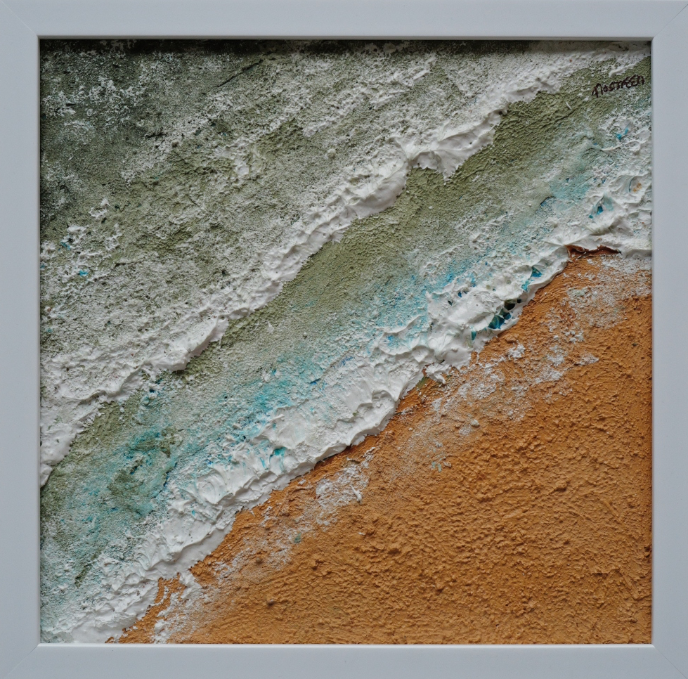
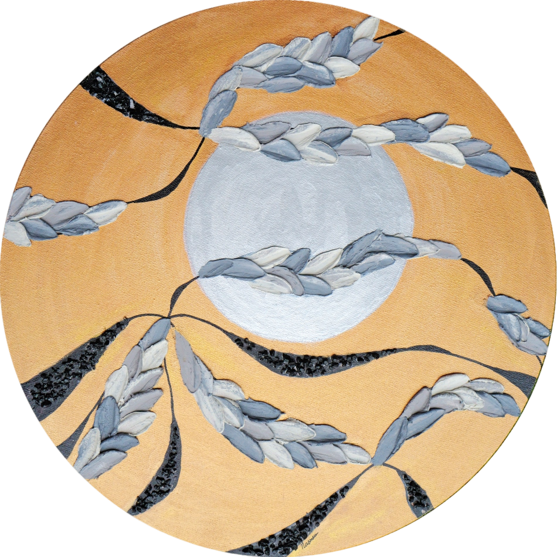

Behind the cut-overlooking the colourful floral field from the calmness of your home.curtains made with fabric and texture paste creating fall and pleats, the rustic rope add to the beauty of this unique piece.
AP-009 | Size - 21.5" x 21.5"
GOLDEN GLOW
Structured in a hypnotic circular formation created in natural symmetry in shimmering gradients, this textured art is symbolic to the sun.
AP-015 | Size - 20" x 20"
TEXTURED ECHOES
Rich copper hues exude luxury and positive energy. This abstract artwork is tactile and visually engaging that plays with texture, pattern and repetition.
AP-017 | Size - 17" x 21"
CORE OF GOLD
A powerful core breaking through, scattered fragments of gold symbolises radiance and strength.
AP-018 | Size - 13" x 15"
LAYERS OF EMOTION
Every colour represents an emotion that builds up on each other and is shaped with time- textured art told in colour.
AP-019 | Size - 12" x 18"
SHADES OF STILLNESS
A serene blend of muted earthy tones layered to flow through the stillness of time. This painting evokes quiet meditation and connect oneself with the present.
AP-020 | Size - 17" x 21"

SEA AND SAND
Awed by the beauty of the Mediterranean. This painting is a picture of calmness and serenity.
Made with sculpture paste on a canvas board.
AP-021 | Size - 13" x 13"
WAVES AND WHITE
White texture paste create foamy waves, blue skies above reflect the ocean, a raw display of the magnificent water body.
AP-022 | Size - 17" x 21"
TIDES OF TRANQUIL
Two canvases, one story. Where colours flow and boundaries fade. Where the sea kisses the shore. Soft foam envelope delicate starfish on the sandy grains.
AP-023 | Size - 18" x 24" (two pieces)
SEA AND SHIMMER
Oceanic waves inspired, white contemporary threads on gleaming blue base represents the sea. A visual treat that soothes the eyes of the beholder.
AP-024 | Size - 20" x 20"
FROZEN FIRE
This modern and minimalist art - bold and erratic, shows fire and ice in one frame making it a visually stunning piece.
AP-025 | Size - 24" x 36"

MOONLIGHT AND SHADOWS
This circular composition captures the serene rhythm of nature under moonlight where silence speaks and shadows move like whisper.